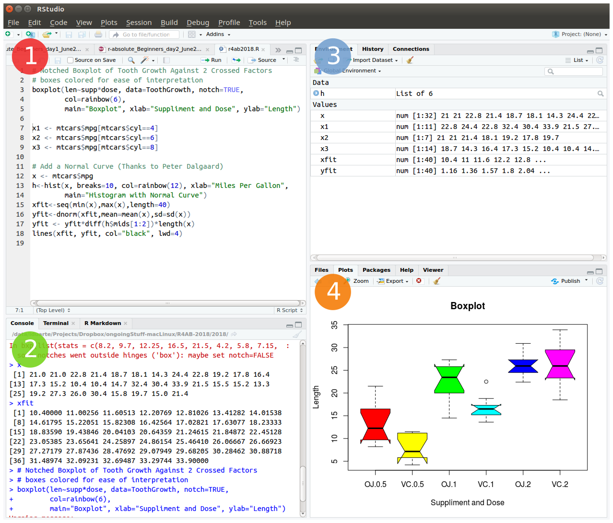

# This is a comment
# 3 + 4 # this code is not evaluated, so and it does not print any result
2 + 3 # the code before the hash sign is evaluated, so it prints the result (value 5)[1] 5The swirl package is an interactive, self-paced, hands-on tutorial. You will learn R inside R. For more info about this package, visit: https://swirlstats.com/
To start open RStudio. This is an Integrated Development Environment - IDE - that includes syntax-highlighting text editor (1 in Figure1), an R console to execute code (2 in Figure1), as well as workspace and history management (3 in Figure1), and tools for plotting and exporting images, browsing the workspace, managing packages and viewing html/pdf files created within RStudio (4 in Figure1).

Type these instructions in the R console (panel 2 in Figure 1).
The words after a # sign are called comments, and are not interpreted by R, so you do not need to copy them.
You can copy-paste the code, and press enter after each command.
install.packages("swirl") # Install swirl
library("swirl") # Load the swirl package to make it available for you to use
swirl() # Start swirlAfter starting swirl, follow the instructions given by the program, and complete all of the following lessons:
Please install the course:
1: R Programming: The basics of programming in R
Choose the course:
1: R Programming
Complete the following lessons, in this order:
1: Basic Building Blocks
2: Workspace and Files
3: Sequences of Numbers
4: Vectors
5: Missing Values
6: Subsetting Vectors
7: Matrices and Data Frames
8: Logic
9: Functions
12: Looking at Data
15: Base Graphics
Now, just Keep Calm… and Good Work!
After finishing the introduction to R with swirl, please recall the following information and hints about R and R programming.
# This is a comment
# 3 + 4 # this code is not evaluated, so and it does not print any result
2 + 3 # the code before the hash sign is evaluated, so it prints the result (value 5)[1] 5# Example with parenthesis:
((2+2)/2)-2[1] 0# Without parenthesis:
2+2/2-2[1] 1. or underscore _ to create longer names to make the variables more descriptive, e.g. my.variable_name.3+2 is the same as 3 + 2, and function (arg1 , arg2) is the same as function(arg1,arg2).; (semi-colon).#Example:
3 + 2 ; 5 + 1 [1] 5[1] 6help(function_name) or ?function_name.# Example: open the documentation about the function sum
help (sum)
# Quick access to help page about sum
?sum RStudio auto-completes your commands by showing you possible alternatives as soon as you type 3 consecutive characters. If you want to see the options for less than 3 chars to get help on available functions, just press tab to display available options. Tip: Use auto-complete as much as possible to avoid typing mistakes.
There are 4 main vector data types in R: Logical (TRUE or FALSE); Numeric (e.g. 1,2,3…); Character (i.e. text, for example “u”, “alg”, “arve”) and Complex (e.g. 3+2i).
Vectors are ordered sets of elements. In R vectors are 1-based, i.e. the first index position is number 1 (as opposed to other programming languages whose indexes start at zero, like Python).
R objects can be divided in two main groups: Functions and Data-related objects. Functions receive arguments inside circular brackets ( ) and objects receive arguments inside square brackets [ ]:
function (arguments)
data.object [arguments]
There are five basic data structures in R: Vector, Matrix, Array, Data frame, and List (see following figure):

12.1 The basic data structure in R is the vector, which requires all of its elements to be of the same type (e.g. all numeric; all character (text); all logical (TRUE or FALSE)).
12.2 Matrices are two dimensional vectors (tables), where all columns are of the same length, and all from the same type.
12.3 Data frames are the most flexible and commonly used R data structures, used to store datasets in spreadsheet-like tables. The columns can be vectors of different types (i.e. text, number, logical, etc, can all be stored in the same data frame), but each column must to be of the same data type.
12.4 Lists are ordered sets of elements, that can be arbitrary R objects (vectors, data frames, matrices, strings, functions, other lists etc), and heterogeneous, i.e. each element can be of a different type and different lengths.
matrix.matrix(1:9, ncol = 3) [,1] [,2] [,3]
[1,] 1 4 7
[2,] 2 5 8
[3,] 3 6 9# My letters matrix
(my_letters <- matrix(rep(LETTERS[1:3], each=3), ncol = 3)) [,1] [,2] [,3]
[1,] "A" "B" "C"
[2,] "A" "B" "C"
[3,] "A" "B" "C" # Element in Row 1, Column 2
my_letters[1,2][1] "B"# Element in Row 2, Column 3
my_letters[2,3][1] "C"# Row 3
my_letters[3,][1] "A" "B" "C"# Column 1
my_letters[,1][1] "A" "A" "A"The working directory is the location in the filesystem (folder) where R will look for input data and where it will save the output from your analysis. In RStudio you can graphically check this information.
dir() # list all files in your working directory
getwd() # find out the path to your working directory
setwd("/home/isabel") # example of setting a new working directory pathThe R environment is controlled by hidden files (files that start with a dot .) in the start-up directory: .RData, .Rhistory and .Rprofile (optional).
These files can be renamed:
# DO NOT RUN
save.image (file="myProjectName.RData")
savehistory (file="myProjectName.Rhistory")To quit R just close RStudio, or use the q () function. You will then be asked if you want to save the workspace image (i.e. the .RData file):
q()Save workspace image to ~/path/to/your/working/directory/.RData? [y/n/c]:
If you type y (yes), then the entire R workspace will be written to the .RData file (which can be very large). Often it is sufficient to just save an analysis script (i.e. a reproducible protocol) in an R source file. This way, one can quickly regenerate all data sets and objects for future analysis. The .RData file is particularly useful to save the results from analyses that require a long time to compute.
In RStudio, to quit your session, just hit the close button (x button), just like when you want to quit any other application in your computer.
In RStudio Server, you must log out of your account. When you log back in, your session will resume.
In R, the fundamental unit of shareable code is the package. A package bundles together code, data, documentation, and tests, and is easy to share with others. These packages are stored in online repositories from which they can be easily retrieved and installed on your computer (R packages by Hadley Wickham). There are 2 main R repositories:
This huge variety of packages is one of the reasons why R is so successful: the chances are that someone has already developed a method to solved the problem that you’re working on, and you can benefit from their work by downloading their package for free.
In this course, we will not use many packages. However, if you continue to use R for your data analyses you will need to install many more useful packages, particularly from Bioconductor — an open source, open development software project to provide tools for the analysis and comprehension of high-throughput genomics data […] based primarily on the R programming language.
There are several alternative ways to install packages in R. Depending on the repository from which you want to install a package, there are dedicated functions that facilitate this task:
install.packages() built-in function to install packages from the CRAN repository;BiocManager::install() to install packages from the Bioconductor repository;remotes::install_github to install packages from GitHub (a code repository, not exclusively dedicated to R).After installing a package, you must load it to make its contents (functions and/or data) available. The loading is done with the function library(). Alternatively, you can prepend the name of the package followed by :: to the function name to use it (e.g. ggplot2::qplot()).
install.packages("ggplot2") # install the package called ggplot2 from CRAN
library ("ggplot2") # load the library ggplot2
help (package=ggplot2) # help(package="package_name") to get help about a specific package
vignette ("ggplot2") # show a pdf with the package manual (called R vignettes)RStudio Projects are a great functionality, easing the transition between dataset analyses, and allowing a fast navigation to your analysis/working directory. To create a new project:
File > New Project... > New Directory > New Project
Directory name: compBiol_module1
Create project as a subdirectory of: ~/
Browse... (directory/folder to save the class data)
Create ProjectProjects should be personalized by clicking on the menu in the right upper corner. The general options - R General - are the most important to customize, since they allow the definition of the RStudio “behavior” when the project is opened. The following suggestions are particularly useful:
Restore .RData at startup - Yes (for analyses with +1GB of data, you should choose "No")
Save .RData on exit - Ask
Always save history - Yes